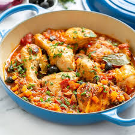

Pollo Alla Cacciatore
Pollo Alla Cacciatore:

Hunter-style chicken stew in tomato & red wine with hearty vegetables, pancetta, and olives. Each region in Italy has its own variation.
Ingredients
- Chicken (skin-on): 8 pieces
- Seasoned flour: 50g
- Carrot: 100g
- Celery: 30g
- Onion: 50g
- Mushroom: 30g
- Garlic: 30g
- Bell pepper: 40g
- Olives: 50g
- Pancetta: 80g
- Tomato (blanched/puree/paste): 400g
- Red wine: 125ml
- Heavy cream: 50g
- Rosemary: 1 sprig
- Bayleaf: 2 nos
- Salt & pepper: as needed
- Olive oil: 30–50ml
- Chicken stock: 500ml
Method:
Pan-fry flour-coated chicken till golden. Sauté pancetta, bay leaf, garlic, onion. Add vegetables, tomato, and wine. Reduce and add cream. Add stock, herbs, seasoning, and chicken. Bring to a boil and serve hot with herbs and olives.
You can also refer the video below:
Pollo Alla Cacciatore(Youtube)